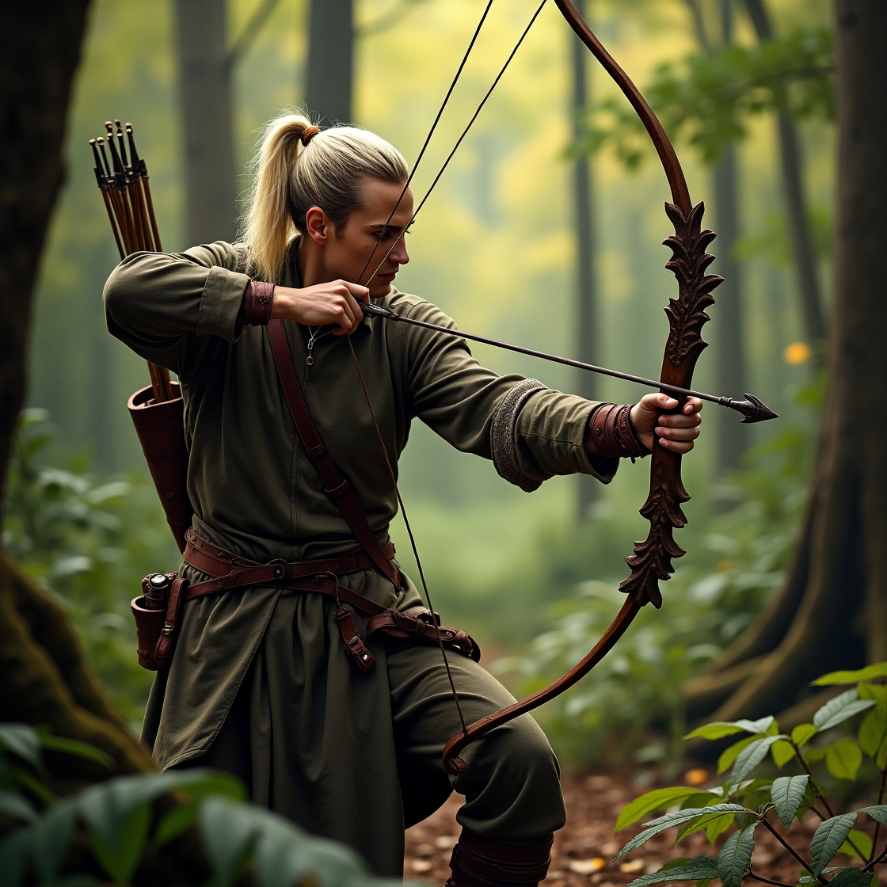
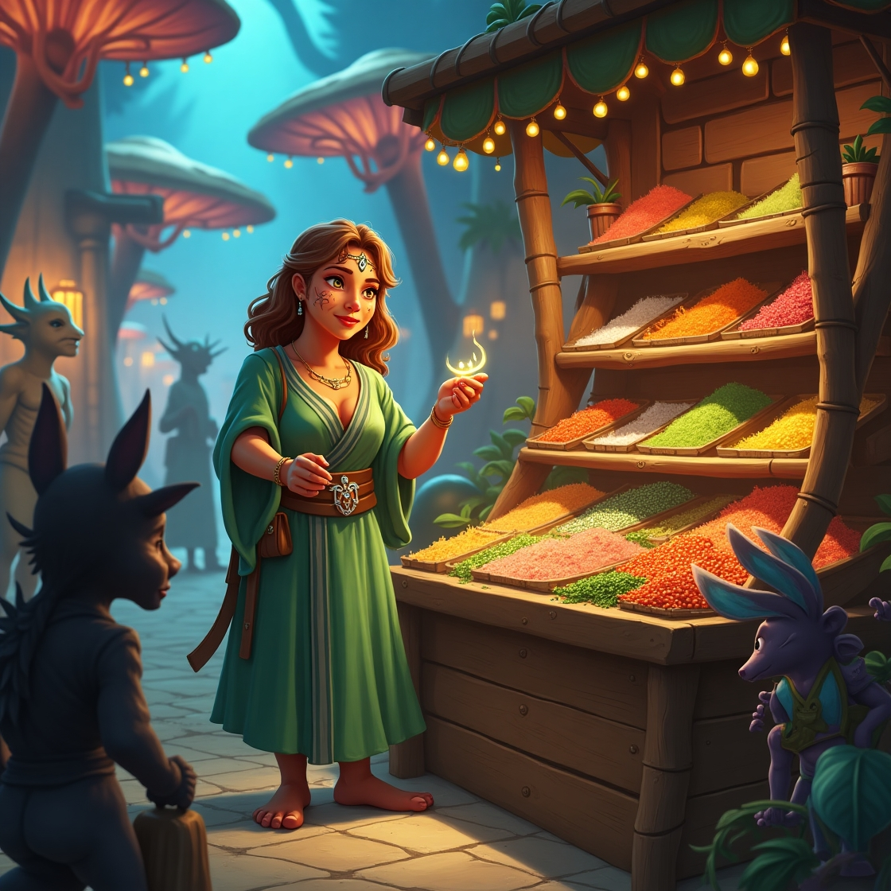
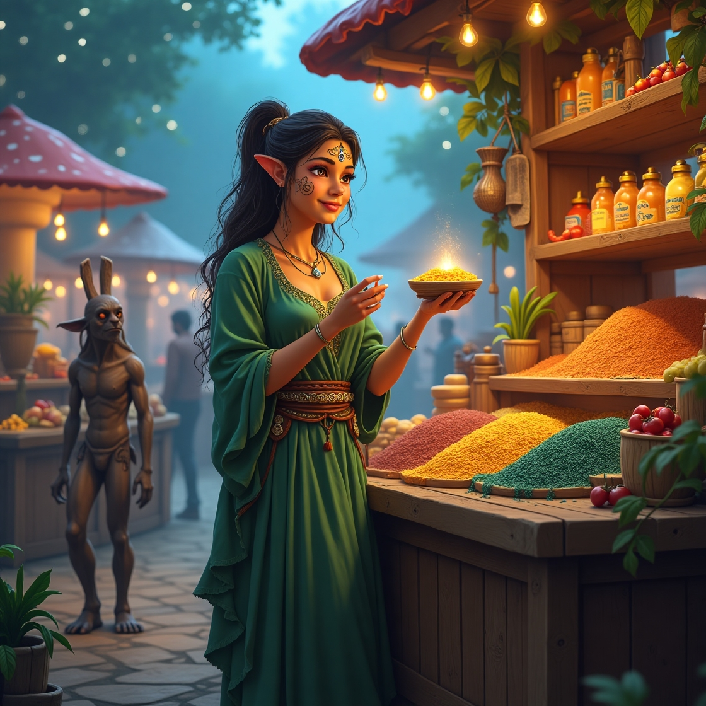

Маг
У світі магії існують дві потужні професії — Маг Синьої Магії та Маг Червоної Магії. Маг Синьої Магії — це майстер часу і розуму, його сила полягає в здатності зупиняти час, маніпулювати реальністю і бачити майбутнє. Його магія стримана й тихо потужна, як спокійний океан. В його руках — мудрість, здатність творити ілюзії та читати людей, спостерігати за їхніми емоціями і думками. Маг Синьої Магії працює як радник, стратег або спостерігач, не втручаючись у зовнішній світ, але завжди знаючи, що станеться далі. Його професія — це постійний баланс між знанням і мовчанням, перемога без боротьби, втручання без помітності. Він стоїть осторонь, але його присутність відчувається у кожній хвилині. Маг Червоної Магії — це володар вогню, пристрасті і сили. Його магія збуджує, вона створює бурі і вогняні вибухи, вона відображає емоції, що палають всередині. Він не знає спокою, тому його магія завжди активна, завжди руйнівна. Червоний маг може знищити ворога одним рухом, перетворюючи свою пристрасть у полум’я. Його професія — це бій, руйнування та відродження. Він працює в бойових ситуаціях, як охоронець, воїн або керівник, надихаючи своїм прикладом і безстрашністю. Його емоції горять у ньому і навколо нього, що дозволяє йому ставати безмежно сильним. Він не боїться показати свою силу і жити на межі. Попри їхні відмінності, обидва маги — спеціалісти у своїй стихії, і хоча їхні шляхи рідко перетинаються, вони існують у гармонії в цьому світі. Кожен з них має свій шлях: Синій маг — це мудрість і час, Червоний маг — це енергія і вогонь. І хоча вони можуть бути протилежними, обидва вчать, що справжня магія — це баланс між руйнацією і відновленням, між спокоєм і пристрастю.


лучник
Лучник — це професіонал, що вміє спрямовувати свої стріли з точністю, яка межує з мистецтвом. Його основна зброя — лук, і його сила полягає не лише в фізичній вправності, а й у здатності бачити ціль у найдрібніших деталях. Лучник — це спостерігач, мов тінь, що завжди залишається непоміченим, поки його стріла не знайде свою мету. У світі, де кожен бій важливий, а кожна стріла може вирішити долю, лучник не шукає бою, він чекає моменту, коли його стріла стане вирішальною. В його руках лук стає продовженням тіла, а стріла — його думкою, що може пробити найміцніший щит або вбити ворога з далекої відстані. Важливі не сила, а точність і холоднокровність. Лучники часто стають розвідниками або снайперами в арміях, адже їхня здатність бачити далеко вперед і реагувати на зміну ситуації робить їх незамінними у будь-якому бою. Вони можуть не вступати в ближній бій, але їхній вплив на результат конфлікту неймовірно великий. Їхній погляд проникає у темряву, і вони завжди на крок попереду. Часто лучники вважаються мовчазними і зібраними людьми, бо їхня сила — в самоконтролі і здатності працювати з природою. Кожна стріла для них — це не просто зброя, а частина їхнього серця, мета якої — не лише поразка ворога, а й відновлення порядку в світі, бо в їхньому прицілі завжди справедливість. Лучник — це професія тих, хто цінує тишу, спостережливість і стратегічний розум. Він стає легендою не через свої вчинки, а через точні удари, що вбивають з далекої відстані. І хоч його часто не помічають у натовпі, він завжди залишає свій слід.
Торговець
Торговець — це людина, чия сила не в мечах, а в словах і вмінні розуміти цінність того, що інші не бачать. Його професія — це постійний пошук балансу між бажаннями і потребами, між ринком і товаром, між прибутком і чесністю. Торговець не просто продає, він створює відносини, він будує міст між людьми і товаром, і вміння переконувати — його справжня магія. В його руках — не тільки тканини, метал або спеції, а й сила слів. Він може продати будь-який товар, якщо вміє знайти правильні слова і показати покупцю, чому він потребує саме це. У світі, де кожен шукає вигоду, торговець є майстром, який відчуває цінність навіть у найбільш звичайних речах. Його успіх залежить від здатності передбачити тренди, впливати на рішення людей і підтримувати довгострокові стосунки. Торговець часто мандрує з міста в місто, відкриваючи нові шляхи для бізнесу і навчаючи інших секретам продажу. Він не боїться ризику, бо його робота — це гра на межі. Кожен угода може бути вигідною або привести до краху, тому він завжди уважний, хитрий і готовий до будь-яких ситуацій. Окрім вміння продавати, торговець володіє знаннями про різні культури, товари, варіанти ціноутворення та обміни. Він знає, що інколи найкраща угода — це та, що приносить довіру, а не миттєву вигоду. Його товар може бути найкращим, але його слава — це слава розуміння і гнучкості. Хоча торговці часто здаються просто честними бізнесменами, у їхніх словах і справах є щось магічне. Вони можуть зробити звичайну річ бажаною і навіть вивести на новий рівень старі ідеї. Їхня здатність знаходити можливості навіть у найтемніших часах робить їх важливими учасниками економіки і культури, часто непомітними, але невід'ємними. Торговець — це не просто професія, це шлях вмінь і мудрості, де кожен продаж — це крок до розуміння світу, де гроші не є кінцевою метою, а лише інструментом для втілення бажань і досягнення гармонії.
 